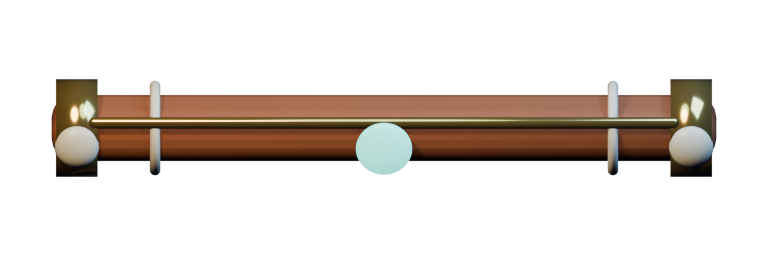
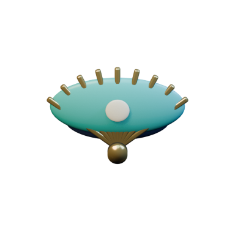

LIVE · ONE DAILY REDDIT SONG
MOON SAND
Solve four moonlit physics rooms. Every winner adds an eight-note melody to today's community chorus.
TODAY'S COMMUNITY SONG
0/100 VOICES
♪♪♪


TILT TO RESCUE STRAYS